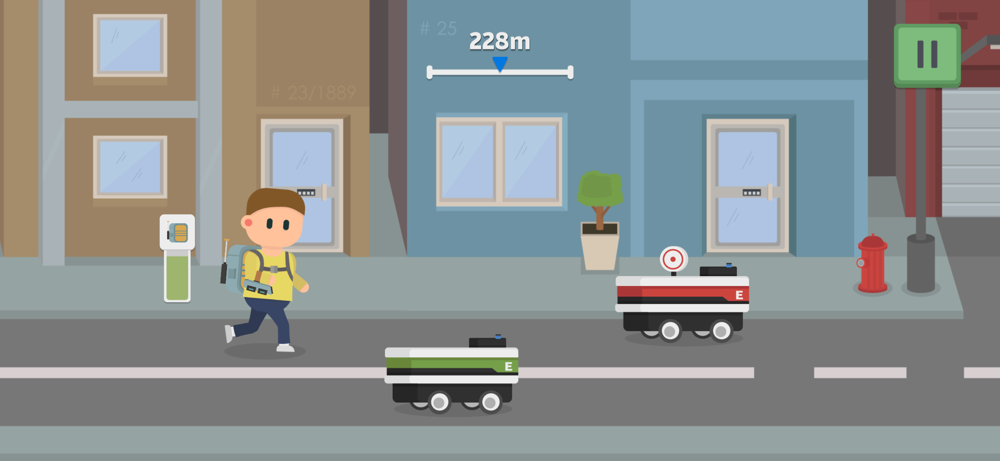
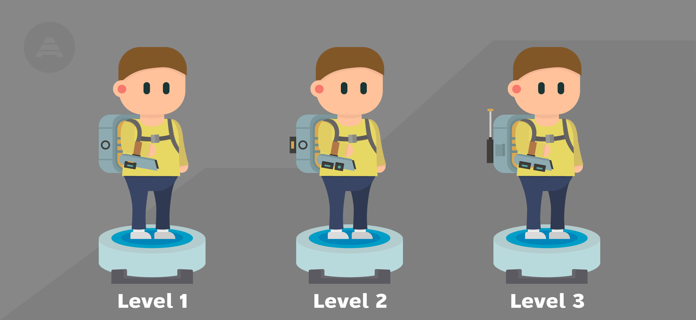
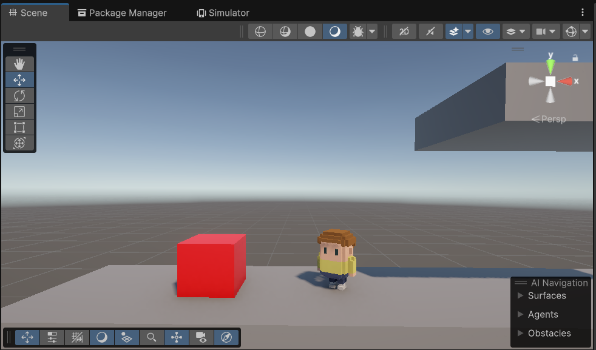

I am an enthusiastic Game Developer with four years of experience working with Unity and C#.
I specialize in creating engaging game mechanics, levels, and user interfaces that enhance the player's experience.
Throughout my career, I have been involved in all stages of development, from initial concept and design to optimization and release.
I successfully developed a mobile game with over 1,000 lines of optimized and structured code, which allowed me to refine
my skills in programming, optimization, and using Unity’s tools to create seamless and interactive gameplay.
I am proficient in the entire game development process, including planning, implementation, balancing, and final tweaks.
My expertise extends to graphic editors and office software, which I use regularly for asset creation and documentation
management.
With my experience and technical skills, I am comfortable working with diverse teams and quickly adapting to new tools
and environments.
Here, I describe my game development process step by step, demonstrating the skills and tools I use to bring my ideas to life.
Stage 1 - Make a Design Document
If I have an idea, then I need to create a Design Document. This document will outline the concept, gameplay mechanics,
level design, art style, and any technical details needed for the game development process.
Tools used:
• Google Docs
• Trello
• Illustrator

Stage 2 - Make a Prototype
Before developing a full game, I create a prototype to test the core mechanics and gameplay loop.
This helps to validate the idea and make necessary adjustments early.
Tools used:
• Unity
• C#
• Illustrator

Stage 3 - Test the Prototype
Once the prototype is done, it needs to be tested to ensure the gameplay mechanics work as expected.
This stage focuses on getting feedback and identifying issues early on.
Tools used:
• Unity
• Google Docs
Stage 4 - Develop Core Gameplay
At this stage, the core gameplay mechanics will be expanded and refined. This includes adding more features,
improving controls, and adding basic assets.
Tools used:
• Unity
• C#
• Blender
Stage 5 - Create Levels and Game Content
This is the phase where I create the environments and levels of the game.
I will build the world in which the game will take place.
Tools used:
• Unity
• Blender
• Illustrator
Stage 6 - Implement Art and Visuals
At this stage, I replace any placeholder assets with final art. I refine the visual style of the game,
including lighting, effects, and animations.
Tools used:
• Unity
• Blender
• Illustrator
Stage 7 - Add Sound and Music
Now I add sound effects and background music that fit the game's atmosphere.
Tools used:
• Unity
• FL Studio
Stage 8 - Balance and Polish
This phase focuses on refining the game’s mechanics, difficulty, and overall balance.
I also start optimizing performance and fixing bugs.
Tools used:
• Unity
• C#
Stage 9 - Alpha Testing
I test the game to identify bugs and collect feedback. At this stage, I focus on game-breaking issues and major bugs.
Tools used:
• Unity
Stage 10 - Beta Testing
I release the game to a larger audience, gather feedback from players, and make final adjustments based on the data.
Tools used:
• Google Forms
Stage 11 - Final Polish and Release
This is the final stage where I fix any remaining bugs, optimize performance, and prepare the game for release.
Tools used:
• Unity
• C#
Stage 12 - Post-release Support
After the release, I continue supporting the game with bug fixes, updates, and potentially new content based on player feedback.
Tools used:
• Unity
• Trello
Marty On The Run
Marty On The Run is a 2D game developed on the Unity engine, in the endless runner genre.
It offers a wide range of character customization, numerous heroes, as well as daily tasks
and gadgets that can be upgraded.
Game features:
• Character and Jetpack Customization
Players have the option to choose from a variety of heroes and jetpacks,
allowing them to create a unique playstyle with vibrant colors and distinct character designs.

• Record Distance Challenges
The game encourages players to aim for personal bests by setting new distance records.
Players will face various obstacles that challenge them to push their limits and achieve higher scores

• Gadget Usage
Various gadgets are available to help players navigate through dangerous obstacles and collect crystals more efficiently.
These gadgets add a layer of strategic depth to the gameplay.

• Gadget Upgrades
Gadgets can be upgraded to improve their durability and enhance their functionality.
These upgrades allow players to collect even more crystals and progress further in the game.

• Daily Tasks
Daily tasks provide players with valuable rewards and unlock new opportunities to enhance their heroes
and their gameplay experience.

Dynamic Town System
At first glance, the game may seem simple, but its visual style is deceptive.
The game features a unique Dynamic Town system that makes every session unique.
What is this system?
The system consists of two main parts, which preload all necessary assets when the scene is loaded and then use them dynamically.
• The first part – background generation The background system is responsible for the city streets, which consist of randomly selected elements. This creates the effect of a constantly changing city, making each run unique.
• The second part – foreground generation The foreground contains the player, obstacles, and bonuses.
This part of the system is further divided into two subsystems:
• Main gameplay – responsible for spawning obstacles, placing platforms, and controlling player behavior.
• Mini-games with gadgets – activated when using special items and adding variety to the gameplay.
Optimization and Object Management
Instead of constantly creating new objects for each part of the scene, the system uses existing ones.
Each object moves across the scene and is activated when it enters the player's view. When an object goes off-screen,
it is deactivated and returned to its starting position for the next use.
This optimizes the game's performance and avoids constant frame rate spikes, as the system does not create new
objects unnecessarily but simply reuses existing ones. This reduces the load on the processor and graphics,
maintaining a stable frame rate.
How the object selection and game dynamics work?
In Marty On The Run, each obstacle has its own tag, which associates it with a certain object layer. This allows for varying the speed, sounds, and behavior of objects depending on their category.
Layers help define the general category of the object, and the tags then determine individual settings, such as speed and sound randomizers.
• Individual speed: Over time, the speed of objects gradually increases according to their initial speed.
This creates growing intensity and challenge for the player, as objects become faster and more unpredictable.
• Sound randomizers: Each object has a unique sound, adding variety and realism by mimicking different motor
sounds or other noise effects in the Town.
This system ensures dynamic and adaptive gameplay, where objects are constantly changing, creating new challenges for the player.
Google play

Marty Mountain Climber
Marty Mountain Climber is a retro-style 3D platformer inspired by the Nintendo classic Ice Climber,
but with a modern reinterpretation. The game features voxel-based 3D graphics, delivering a nostalgic
yet fresh look, while the pixel-art UI enhances the retro aesthetic.
Game features:
• Unique Controls
Simple and smooth gameplay with just one joystick.
• Exciting Platforming
Climb dangerous peaks, jump across platforms, and overcome obstacles.
Face off against various enemies in thrilling battles as you make your way to the top.
• Epic Boss Fights
Test your skills in dynamic battles.
• Expanded Character Customization
Create your own unique style.

In Development...